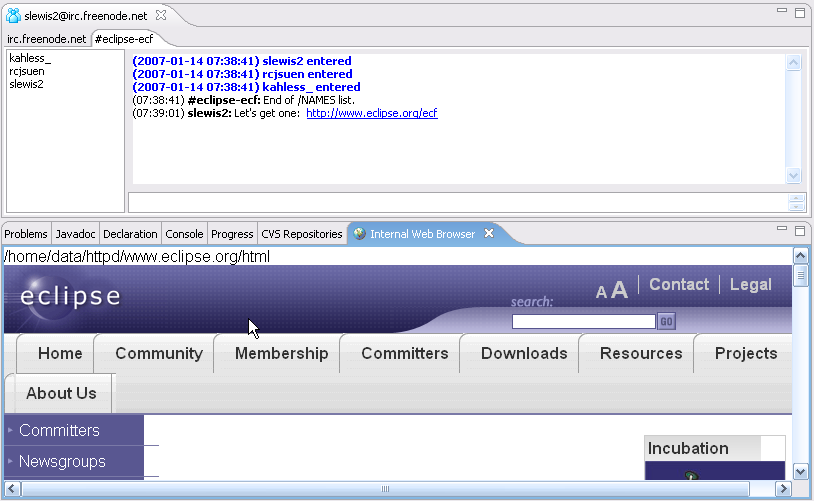

ECF UI Additions |
|
Able to open links in internal browser
|
For the IRC chat window, URLs now appear as underlined, and when clicked on will open the internal browser window for the given page.
Here's a screenshot:

|
|
New Connect Wizards for IRC, XMPP providers
|
Using the org.eclipse.ecf.ui.connectWizard extension point, there are new connectWizards for IRC and XMPP providers. The wizard classes may be
found in the two (new) plugins: org.eclipse.ecf.provider.xmpp.ui and org.eclipse.ecf.provider.irc.ui.
|
|
Simplified RosterView class
|
Using the Presence API Refactoring described below, a simplified and extensible roster view class was created in the org.eclipse.ecf.presence.ui
plugin: MultiRosterView. This view presents multiple rosters, using the MultiRosterContentProvider class present in the same package. This
replacement roster view will be used to introduce other features into the roster user interface, and is also suitable for extension
by subclasses or replacement.
|
API Enhancements |
|
Presence API Refactoring to Support JFace Content Providers
|
The presence API (plugin: org.eclipse.ecf.presence) has been enhanced to support JFace viewers. Specifically,
the roster interface classes (IRosterManager, IRoster, IRosterEntry, IRosterGroup, IRosterItem) have been enhanced
so that they can easily be used as the basis of an JFace ITreeContentProvider. This allows the
use and automatic update of a roster (buddy) list by an ECF provider that implements the presence API (e.g. the XMPP provider). For example, here is code in the new plugin
org.eclipse.ecf.presence.ui that creates a tree viewer to display multiple rosters:
protected void setupTreeViewer(Composite parent) {
treeViewer = new TreeViewer(parent, SWT.BORDER | SWT.MULTI
| SWT.V_SCROLL);
getSite().setSelectionProvider(treeViewer);
multiRosterContentProvider = new MultiRosterContentProvider();
multiRosterLabelProvider = new MultiRosterLabelProvider();
treeViewer.setLabelProvider(multiRosterLabelProvider);
treeViewer.setContentProvider(multiRosterContentProvider);
treeViewer.setInput(new Object());
}
With this approach, the UI/viewer code does not need to know anything about the messaging to change/update the roster
model. This model is managed by the ECF provider (XMPP) and when
The MultiRosterContentProvider class (and others to support this new approach) are available
in the (new) plugin: org.eclipse.ecf.presence.ui. See the classes in the org.eclipse.ecf.presence.ui package
for example usage and reusable base classes.
|